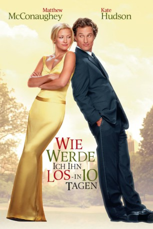
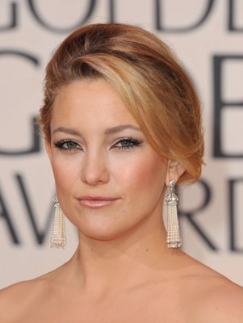

#8962 Wie werde ich ihn los in 10 Tagen
Alternativ: How to Lose a Guy in 10 Days
 
 IMDB-Wertung: 6.4 / 10
IMDB-Wertung: 6.4 / 10  Metascore: 0
Metascore: 0 
Seltsame Voraussetzungen für eine Beziehung: die Journalistin Andie will Ben in zehn Tagen loswerden, weil sie einen Artikel darüber schreiben will, er hingegen hat gewettet, daß sie sich in zehn Tagen in ihn verliebt, und sollte er es schaffen, winkt dem Werbefachmann ein attraktiver Auftrag.
Jahr: 2003
Dauer: 115 Minuten
FSK: 0
Land: USA Studio: Paramount PicturesTonspuren: DD5.1 - ,
Untertitel: Deutsch,
Auflösung: 1080p (1920x1080) Größe: 8949 MB
Genre: Komödie, Liebe
Regisseur: Donald Petrie
Drehbuch: Michele Alexander
Soundtrack: David Newman
Darsteller:
-  Kate Hudson als Andie Anderson
 Matthew McConaughey als Ben Barry
Matthew McConaughey als Ben Barry Kathryn Hahn als Michelle Rueben
Kathryn Hahn als Michelle Rueben Annie Parisse als Jeannie
Annie Parisse als Jeannie Adam Goldberg als Tony
Adam Goldberg als Tony Thomas Lennon als Thayer
Thomas Lennon als Thayer- Michael Michele als Judy Spears
 Shalom Harlow als Judy Green
Shalom Harlow als Judy Green Robert Klein als Phillip Warren
Robert Klein als Phillip Warren Bebe Neuwirth als Lana Jong
Bebe Neuwirth als Lana Jong- Samantha Quan als Lori
 Celia Weston als Glenda
Celia Weston als Glenda James Murtaugh als Jack
James Murtaugh als Jack- Archie MacGregor als Uncle Arnold
- John DiResta als Joey Sr.
- Rebecca Harris als Dora
- Liliane Montevecchi als Mrs. DeLauer
 William Hill als DeLauer Security
William Hill als DeLauer Security- Georgia Craig als Receptionist Candi
 Tony Longo als Sensitive Moviegoer
Tony Longo als Sensitive Moviegoer- Doug Murray als Mark Sawyer
 Natalie Brown als Mrs. Sawyer
Natalie Brown als Mrs. Sawyer Andrew Moodie als Poker Pal Ronald
Andrew Moodie als Poker Pal Ronald- David Macniven als Poker Pal Francis
- Ross Gallo als Young Concession Worker
- Gina Sorell als Vegetarian Waitress
- Ingrid Hart als Mullen's Hostess
- Marvin Hamlisch als Marvin Hamlisch
- Marv Albert als The Voice of the New York Knicks
- Ames Adamson als (unconfirmed)
 Craig Castaldo als Himself (uncredited)
Craig Castaldo als Himself (uncredited) Dono Cunningham als Man in Park (uncredited)
Dono Cunningham als Man in Park (uncredited)- Jody Raymond als Friend (uncredited)
- David C. Roehm Sr. als Motorist (uncredited)
- Justin Peroff als Mike
- Scott Benes als Joey Jr.
- Zachary Benes als Joey Jr.
- James Mainprize als Mr. DeLauer
- Warner Wolf als Warner Wolf
- Jeff Gruich als Poker Pal Joe
- William Duell als Old Concession Worker
- Diego Fuentes als Kitchen Worker
- Al Bernstein als Party Waiter
- Collin Barrett als Orchestra
- Bruce Farquhar als Orchestra
- Rod MacDonald als Orchestra
- Bob Reeves als Orchestra
- Gery Soles als Orchestra
- Jim Paris als Orchestra
- Frank Penny als Orchestra
Datei: X:\2003(N-Z)\Wie werde ich ihn los in 10 Tagen (2003, FSK0, 1920x1080).mkv seit 16.05.2018
Festplatte: HD 2003-2004-2005(A-F)
 Es gibt insgesamt 46 Filme in der Gruppe '2003(N-Z)'
Es gibt insgesamt 46 Filme in der Gruppe '2003(N-Z)'